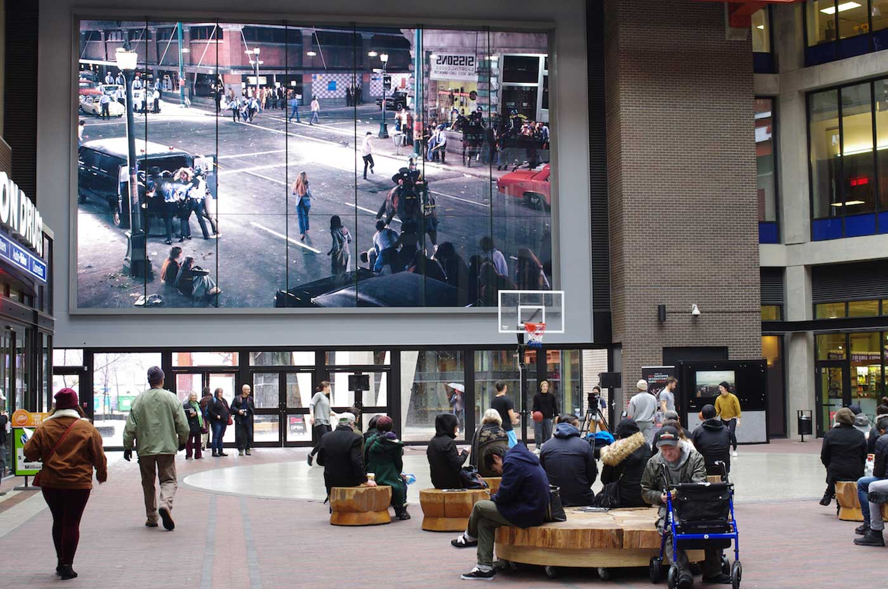

Stan Douglas, Abbott & Cordova, 7 August 1971 (2008), Woodward’s Atrium, Vancouver. © Stan Douglas. Courtesy of the artist, Victoria Miro, and David Zwirner.
Please join us for a keynote conversation between artist Stan Douglas and curator Melanie O’Brian, to be followed by a live Q+A moderated by Claudette Lauzon.
Hinging on Stan Douglas’ recent and upcoming work, the conversation will consider patterns of history, the public realm and showing up.
This conversation will be filmed and broadcast live from the World Art Centre at the Goldcorp Centre for the Arts (Simon Fraser University), located on the unceded Traditional Coast Salish Lands of the xʷməθkʷəy̓əm, səl̓ilw̓ətaʔɬ and Sḵwx̱wú7mesh Úxwumixw Nations.